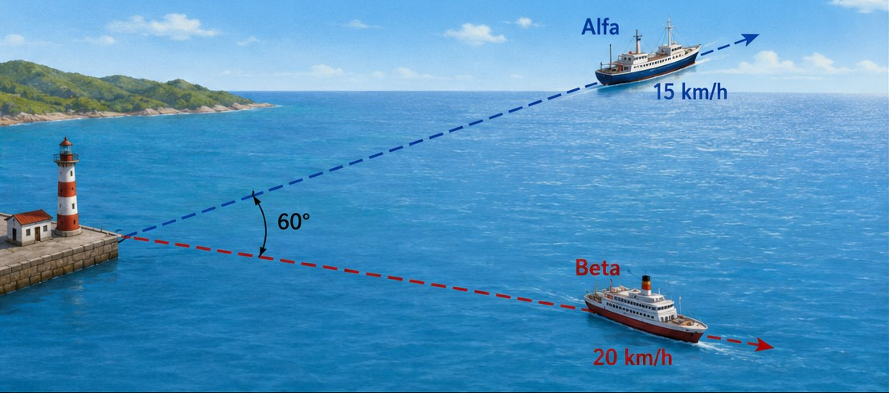
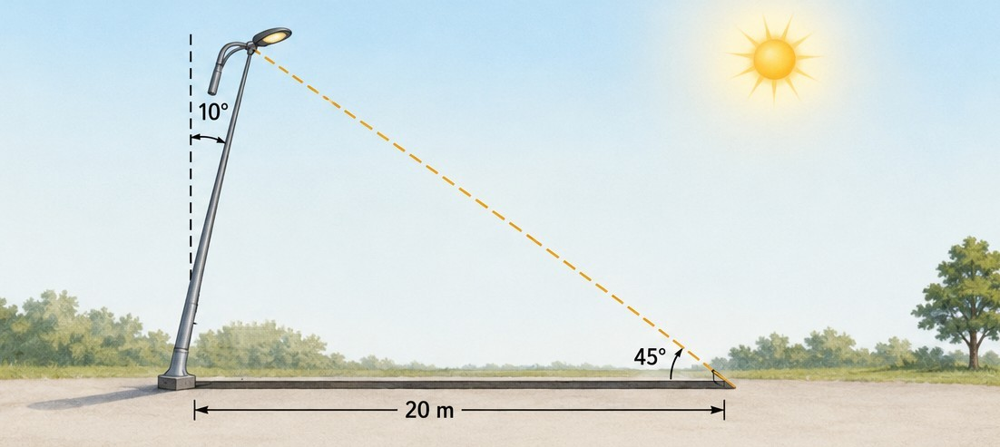

Resolución de Triángulos Oblicuángulos
En niveles básicos aprendemos el Teorema de Pitágoras y las razones trigonométricas clásicas (Seno, Coseno, Tangente). Sin embargo, esas herramientas solo funcionan si el triángulo tiene un ángulo de 90° (triángulo rectángulo).
En problemas reales de topografía, ingeniería o navegación, la mayoría de los triángulos no tienen ángulos rectos. A estos se les conoce como Triángulos Oblicuángulos. Para poder calcular sus lados y ángulos desconocidos, necesitamos estrategias más generales: La Ley de los Senos y la Ley de los Cosenos.
El secreto de la trigonometría es diagnosticar qué datos tienes. Todo triángulo tiene 6 elementos (3 lados y 3 ángulos). Para resolverlo, necesitas conocer al menos 3 de ellos (y al menos uno debe ser un lado). Según los datos que tengas, elige tu estrategia:
Relaciona la proporción directa entre un lado y el seno del ángulo opuesto a ese lado.
a / sen(A) = b / sen(B) = c / sen(C)Es una "generalización" del Teorema de Pitágoras. Relaciona los tres lados con un solo ángulo.
c² = a² + b² - 2ab · cos(C)Lee cuidadosamente cada problema, observa el diagrama correspondiente e identifica la estrategia. Resuelve y selecciona tu respuesta.

